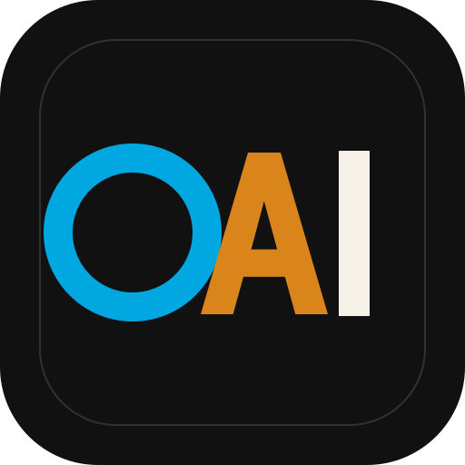

Hancock
AI-powered cybersecurity workflows, operator interfaces, and authorized security support built around the Hancock platform.
Open Hancock site
0AIJohnny Watters / 0ai-Cyberviser
AI, cybersecurity, automation, and controlled fork work operate here as one company surface across three GitHub accounts: 0ai-Cyberviser, cyberviser, and cyberviser-dotcom.
Original 0AI projects are presented as company projects. Forked repositories remain subject to upstream licenses, with 0AI claims limited to fork-specific modifications, branding, metadata, and new original material.
Flagship work
AI-powered cybersecurity workflows, operator interfaces, and authorized security support built around the Hancock platform.
Open Hancock siteDataset control plane with provenance tracking, safety gates, and policy-first automation for AI/ML training workflows. Part of the CyberViser AI stack for secure fuzzing and dataset generation.
Open PeachTree site Company sitePolicy-first automation for PR cleanup, repo monitoring, and guarded workflow execution.
Open repositoryExperimental AI-assisted cybersecurity tooling and orchestration work inside the 0AI portfolio.
Open repositoryPublic profile repositories, portfolio routing, and consistent ownership, support, and security surfaces across the accounts.
Open profile repoAccount map
Primary engineering, portfolio, and original project account.
Visit accountCyberViser brand publishing, project presentation, and public tooling.
Visit accountDistribution, continuity, and public fork visibility inside the same portfolio.
Visit accountOperating model
Johnny Watters / 0ai-Cyberviser is the visible operator across the public GitHub layer.
Security, support, and contribution control files route back to the same owner contact path.
Upstream code stays upstream-licensed. 0AI claims are limited to lawful fork-specific modifications and original material.
Repo descriptions, homepages, profile repos, and topic tags all point back into the same company layer.
Contact
For portfolio support, company contact, or private security reporting: